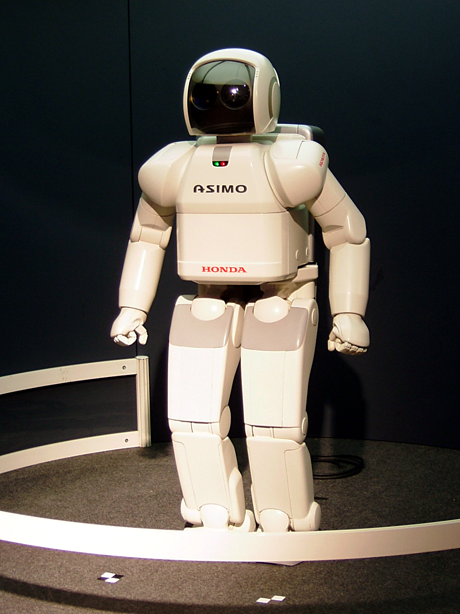

This site is about robotics and how technology is shaping the future. Robotics combines engineering, programming, and creativity to build machines that can help people in everyday life. One cool fact is that robots are already used in hospitals to assist with surgeries and deliver medicine.
If you want to learn more about technology and robotics, visit the link below.
Learn More About Technology